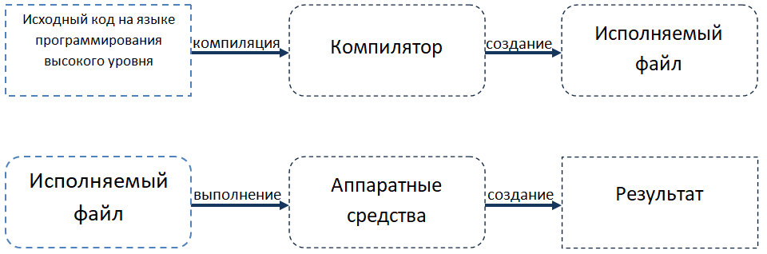
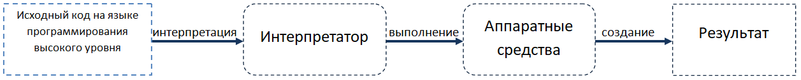

Введение в языки программирования
Современные компьютеры невероятно быстры и с каждым днем становятся все быстрее.
Тем не менее, даже при имеющихся скоростях возникают некоторые существенные ограничения:
компьютеры изначально понимают очень ограниченный набор команд, и им нужно точно объяснять,
что делать. [1]
Компьютерная программа (или по другому приложение)
представляет собой набор инструкций (команд), которые необходимо выполнить компьютеру
для решения определенной задачи. С определенной точки зрения эти инструкции определяют поток электрических импульсов
в компьютерной системе. Эти импульсы оказывают влияние на память компьютера и
взаимодействуют с экраном монитора, клавиатурой, мышью и даже с другими компьютерами в сети.
Это все создает ту самую «магию», которая позволяет людям выполнять полезные задачи,
решать проблемы высокого уровня и играть в игры.
Одна программа позволяет компьютеру выполнять роль калькулятора, а другая превращает машину в достойного
шахматного противника.[2]
Процесс создания программ называется программированием.
Программисты - это люди, которые создают программы путем написания исходного кода (или просто кода),
который представляет собой список команд, написанных на одном из языков программирования.
Машинный язык
Ограниченный набор инструкций, которые процессор может понять непосредственно,
называется машинным кодом (или машинным языком или набором инструкций).
Вот пример инструкции на машинном языке: 10110000 01100001. [1]
Первое время после изобретения компьютеров, программистам приходилось писать программы непосредственно на
машинном языке, что было очень сложно и занимало много времени.
Язык ассемблера
Поскольку машинный язык очень сложен для чтения и понимания, был изобретен язык ассемблера.
На языке ассемблера каждая инструкция идентифицируется коротким сокращением (а не набором битов),
и могут использоваться имена и другие числа.
Вот та же инструкция, что и выше на языке ассемблера: mov al, 061h. [1]
Данный подход упрощает чтение и написание кода. Однако процессор не может понимать язык ассемблера напрямую.
Вместо этого программа должна быть переведена на машинный язык, прежде чем она может быть выполнена компьютером.
Это делается с помощью специальной программы под названием ассемблер.
Программы, написанные на языках ассемблера достаточно быстрые, и ассемблер все еще используется сегодня, когда скорость критична.
Тем не менее, подход по-прежнему имеет некоторые недостатки.
Во-первых, языки ассемблера все еще требуют много инструкций для выполнения даже простых задач.
Несмотря на то, что отдельные инструкции читаются человеком, понимание того, что делает целая программа,
может оказаться непросто. Во-вторых, язык ассемблера все еще не очень переносим - программа,
написанная на ассемблере для одного процессора, скорее всего, не будет работать на оборудовании,
которое использует другой набор команд, и ее придется переписать или значительно изменить. [1]
Языки высокого уровня
Для решения проблем читабельности и переносимости были разработаны новые языки программирования,
такие как C, C++, C#, Java, Javascript и др.
Эти языки называются языками высокого уровня, так как они предназначены для того,
чтобы программист мог писать программы, не заботясь о том, на каком компьютере будет запускаться программа.
Вот та же инструкция, что и выше в C++: a = 97; [1]
Подобно ассемблерным программам, программы, написанные на языках высокого уровня,
должны быть переведены в формат, понятный компьютеру. Это делается двумя основными способами:
компиляцией и интерпретацией.
Компилятор и интерпретатор
Компилятор - это специальная программа, которая читает исходный код и
создает автономную исполняемую программу,
которая затем может быть запущена пользователем. Как правило эта программа представляет собой файл
с расширением ".exe". Такой файл еще называют
исполняемым файлом.[2]
В упрощенном виде процесс компиляции выглядит следующим образом:

Интрерпретатор - это программа, которая непосредственно выполняет команды в исходном коде,
при этом не требуется чтобы они были скомпилированы в исполняемый файл. Интерпретаторы, как правило, более гибкие,
чем компиляторы, но менее эффективны при запуске программ, потому что процесс интерпретации должен
выполняться каждый раз, когда запускается программа, тогда как компиляция проводится только один раз, после
чего исполняемый файл выполняется неограниченное количество раз.
Это означает, что интерпретатор необходим при каждом запуске программы.
В упрощенном виде процесс интерпретации выглядит следующим образом:

Большинство языков являются компилируемыми или интерпретируемыми. Такие языки, как C, C ++ и Pascal,
компилируются,
тогда как языки «сценариев», такие как Perl и Javascript, являются интерпретируемыми.
Некоторые языки, такие как Java, сочетают компилятор и интерпретатор.
Источники
- Richard L. Halterman. Fundamentals of Programming C++. School of Computing Southern Adventist University., February 5, 2019
- Learn C++., 2018. https://www.learncpp.com/